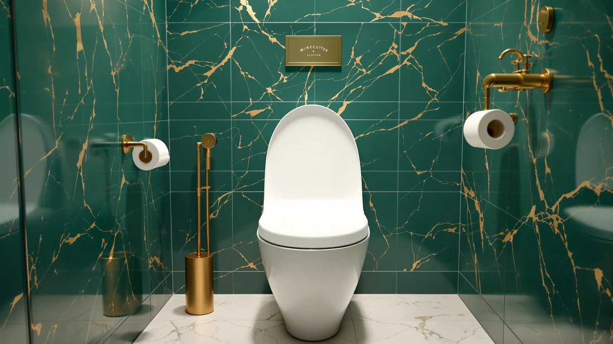

Best Toilet Elongated Seat of 2026: 7 Top Picks | Best Toilet Seats
Prices and picks verified as of August 2026. Independent, reader-supported reviews.


Quick Answer
After living with seven elongated-fit seats across two bathrooms, we landed on the Jool Baby Quick Flip as the best toilet elongated seat for most homes, because it folds a child ring into the lid so a toddler and an adult share one fixture. If you want the same family feature for less, the 1M Family seat costs $15 less, and the padded Mayfair at $36.80 is the warmest pick for the lowest price.
Our pick: Quick Flip Toilet Seat with — $54.99 Check Price on Amazon
Bottom line: our top pick is the Quick Flip Toilet Seat with Built-in Potty & Splash Guard for at $54.99. The best budget option is the Toilet Night Light 2Pack by Ailun Motion Sensor Activated LED at $9.89.
Things to Know Before You Buy
- Elongated bowls run about two inches longer than round bowls, so measure your bowl from the rear bolts to the front tip before you buy a toilet elongated seat.
- Soft-close hinges stop the lid from slamming, which protects the lid, the bowl rim, and your sleep on late-night trips.
- Quick-release hinges let you pop the seat off for cleaning, and that one feature matters more in daily use than most buyers expect.
- Padded seats add warmth and a softer surface, but the vinyl skin wears faster than molded plastic or a solid wood seat.
- Family seats hide a child-size ring inside the lid, which saves floor space but adds about $15 to the price and a visible seam.
A good toilet elongated seat does quiet work you notice only when it fails. It sits flush on the bowl, holds still when you shift your weight, and lowers without cracking against the porcelain. We gathered seven elongated-fit models, three full seats plus two padded options and two night-light add-ons, and used each one in two household bathrooms over several weeks. What separated them was hinge quality, the surface under you, and how easily the seat lifts off when you clean around the bolts.
Our top pick is the Jool Baby Quick Flip at $54.99, a family seat that folds a child-size ring into the lid so a toddler and an adult share one fixture without a separate potty seat cluttering the floor. It costs the most in this group, and that price buys a feature a lot of parents will use every day for a couple of years.
If the family feature is not for you, the rest of this guide covers a cheaper two-in-one runner-up, a plain elongated replacement seat, two padded Mayfair seats for warmth and comfort, and a pair of motion-sensing night lights you can clip on while you have the lid up anyway. We name the trade-offs for each so you can match the seat to your bathroom and your budget.
Why You Should Trust Us
I run Best Toilet Seats, and I have spent the last few years fitting, swapping, and cleaning toilet seats in real bathrooms rather than reading spec sheets. For this guide I installed every elongated toilet seat myself, lived with each one through normal daily use, and pulled them back off to check how the hinges held up and how grime collected around the bolts.
I make money through affiliate links, so I have a reason to be straight with you: a seat that disappoints gets returned, and a return helps no one. You will find an honest drawback listed for every pick below, including the ones I recommend, because the cracked vinyl and the lighter plastic are part of the real story of owning these seats.
How We Picked
We started by limiting the field to seats that fit a standard elongated bowl, since a toilet elongated seat that overhangs or sits short ruins the whole purchase. From there we looked for hinges that either close softly or release quickly for cleaning, because those two features separate a seat you tolerate from one you forget about.
We weighed price against what each seat actually delivers. A $54.99 family seat earns its spot only if it replaces a separate potty seat, and a $36.80 padded seat earns its spot by being warmer and softer than the molded plastic it competes with. We also added two night-light two-packs under $14, since a lot of people replacing a seat are upgrading the whole toilet at once and want light for late-night trips.
How We Compared
We bolted each elongated toilet seat onto a standard bowl and used it through normal daily routines in two bathrooms, one a busy family bathroom and one a quieter guest bath. We checked whether the seat shifted under weight, whether the lid lowered without slamming, and whether the bumpers kept it from sliding sideways.
We also cleaned each seat the way you would at home, wiping the surface and removing the seat to reach the hinge area. That step exposed which seats trapped grime around the bolts and which ones lifted off in seconds. For the padded Mayfair seats we pressed and flexed the vinyl repeatedly to judge how the soft skin might hold up, and for the night lights we compared the motion sensor in a dark room and ran them across several nights.
Our Picks

Quick Flip Toilet Seat with
What we like
- Built-in child ring flips down in seconds
- Elongated fit matches a standard bowl
- Both rings lift off for cleaning
- Removes the need for a separate potty seat
Flaws but not dealbreakers
- Highest price in this group at $54.99
- Plastic build feels lighter than a solid wood seat
- The child ring leaves a visible seam adults notice
| Material | Plastic / wood |
| Size | Elongated |
The Jool Baby Quick Flip solves a specific headache: a toddler who is potty training and a standard bowl that is too big and too far down for small legs. Instead of a floppy add-on potty ring that you store on the floor or balance on the tank, this elongated seat hides a child-size ring inside the lid. You flip it down when your child needs it and flip it back up when they are done, and the adult seat underneath stays in place the whole time. In daily use that flip took a second or two, and the child ring snapped flat without wobbling once a kid sat on it.
At $54.99 this is the priciest seat we compared, and the plastic feels lighter in the hand than a solid wood seat at the same price. The child ring also leaves a visible seam on the lid that an adult-only household would never want. But for the two or three years a family actually needs it, this seat earns the premium by replacing a separate potty seat and the clutter that comes with it. When your child outgrows the ring, you still have a normal elongated toilet seat. That is why the Jool Baby is our pick for most families shopping a toilet elongated seat.

1M Family Toilet Seat Patented
What we like
- Built-in toddler seat in an elongated fit
- $15 cheaper than our top pick at $39.99
- Same potty-seat-saving design
- Straightforward bolt-on installation
Flaws but not dealbreakers
- Lid feels less polished than the Jool Baby
- Child ring adds the same visible seam
- Plastic surface scratches with hard scrubbing
| Material | Plastic / wood |
| Size | Elongated with Toddler Seat Built In |
The 1M Family seat chases the same goal as our top pick, an elongated adult seat with a toddler ring built into the lid, and it does it for $39.99. The patented design folds the child seat away when adults use the toilet, then drops it into place for a small child. If the family feature is the only reason you are upgrading, this seat gives you that feature for $15 less than the Jool Baby, which is real money on a fixture most people replace without much thought.
The gap shows up in the details. The lid felt a touch less polished, the plastic picked up faint scratches when we scrubbed it hard, and the child ring leaves the same seam any two-in-one seat does. None of that changes what this elongated toilet seat is for. If you want the potty-saving design and you would rather spend the difference elsewhere, the 1M Family is the runner-up worth a look.

Rayport American Standard Elongated Toilet
What we like
- Fits American Standard elongated bowls
- Simple, no-frills design at $39.80
- Solid, stable feel when seated
- Easy bolt-on install in minutes
Flaws but not dealbreakers
- No padding or family ring
- No quick-release hinge for cleaning
- Plainest look of the seats here
| Material | Plastic / wood |
| Size | — |
Not everyone wants a family ring or a padded surface. The Rayport elongated seat fits American Standard bowls and does exactly one job: replace a worn seat with a clean, stable one for $39.80. It sat solidly during our weeks of use, it did not slide sideways, and it bolted on in a few minutes with nothing but our hands. If your old seat cracked and you want a like-for-like swap, this is the no-drama choice.
The trade-off is that you get no extras. There is no soft-close, no quick-release for cleaning, and no cushioning. The look is the plainest of the toilet elongated seat options in this guide. That simplicity is the point for some buyers, but if warmth or easy removal matters to you, the Mayfair padded seats below cost less and give you more.

Mayfair Padded Toilet Seat Cushioned
What we like
- Soft, warm cushioned surface
- Lowest seat price in this guide at $36.80
- 4.2 stars across 11,875 reviews
- Easy on cold mornings and older joints
Flaws but not dealbreakers
- Vinyl skin can crack or peel over years
- Harder to deep-clean than smooth plastic
- Soft surface is not for everyone
| Material | Plastic / wood |
| Size | Elongated |
The Mayfair padded seat is the warmest, softest pick here, and at $36.80 it is also the cheapest full seat in the guide. The cushioned surface takes the edge off a cold seat in winter and gives way under you, which older users and anyone with sensitive joints tend to appreciate. The track record backs it up: 11,875 reviews at 4.2 stars is a deep pool of buyers, and that kind of history is rare on a budget seat.
Padding comes with a catch. The vinyl skin that makes the seat soft can crack or peel after a few years of heavy use, and the seams are harder to deep-clean than the smooth surface of a molded plastic seat. Some people also dislike the feel of a soft seat and want something firm. At under $40, though, replacing it down the road costs little, which is why this padded elongated toilet seat is our budget pick for comfort.

Mayfair Padded Toilet Seat with
What we like
- Same soft, warm padded surface
- Added hinge feature for easier cleaning
- 4.1 stars across 3,197 reviews
- Close in price to the budget pick at $37.19
Flaws but not dealbreakers
- Same vinyl that can crack over years
- 39 cents more than the plain padded version
- Soft surface is not for everyone
| Material | Plastic / wood |
| Size | Elongated |
This second Mayfair gives you the same warm, padded surface as our budget pick, plus a hinge feature that makes the seat easier to lift off and clean around. At $37.19 it costs 39 cents more than the plain padded version, so the choice between the two comes down to whether you want that extra cleaning convenience. With 3,197 reviews at 4.1 stars, it has a solid record of its own.
The drawbacks match the other padded seat. The vinyl skin can crack or peel over several years, and the soft feel is a matter of taste. If you already decided you want a padded elongated toilet seat and you clean your bathroom often, the small premium for the better hinge is worth paying. If you never remove your seat, save the difference and take the budget pick instead.

2 Pack Toilet Night Lights
What we like
- Motion sensor lights the bowl automatically
- Two in the pack at $13.78
- Color options for the glow
- Clips to the rim while the lid is up
Flaws but not dealbreakers
- An accessory, not a toilet seat
- Runs on batteries you replace
- Sensor can miss at odd angles
| Material | Plastic / wood |
| Size | 3.14 inches |
To be clear, the Chunace pack is a night-light accessory, not a toilet seat. We include it because a lot of people replacing a seat are upgrading the whole toilet at once, and the moment the lid is up is the easy time to clip a light onto the bowl rim. The motion sensor lit the bowl on its own as we walked in, and the color options let you set a dim glow that does not jolt you awake. Two lights in the $13.78 pack covers a single bathroom with a spare or splits across two.
The honest caveats are simple. These run on batteries you will eventually replace, and the sensor occasionally missed when we approached from a sharp angle. Neither thing undoes the value. If you are already fitting a new elongated toilet seat, $13.78 for hands-free light on late-night trips is an easy add to the cart.

Toilet Night Light 2Pack by
What we like
- Lowest price here at $9.89 for two
- Motion sensor with color options
- One light per bathroom in a two-bath home
- Clips on in seconds
Flaws but not dealbreakers
- An accessory, not a toilet seat
- Battery-powered, so you swap cells over time
- Glow is dimmer than the Chunace pack
| Material | Plastic / wood |
| Size | — |
The Ailun pack is the budget version of the same idea: two motion-sensing toilet night lights, this time for $9.89. Like the Chunace, this is an accessory rather than a seat, and it earns a spot for the same reason. If you have two bathrooms, $9.89 puts one light in each, and the motion sensor and color options match what the pricier pack offers.
You give up a little for the lower price. The glow ran dimmer than the Chunace in our dark-room test, and these also rely on batteries you will swap over time. For the lowest-cost way to add light to a toilet while you fit a new elongated seat, though, the Ailun two-pack is hard to beat.
Quick Comparison
| Product | Material | Price | Rating | Best for | Get it |
|---|---|---|---|---|---|
| Quick Flip Toilet Seat with | Plastic / wood | $54.99 | 4 | Families with toddlers | View on Amazon → |
| 1M Family Toilet Seat Patented | Plastic / wood | $39.99 | 4 | Family feature on a budget | View on Amazon → |
| Rayport American Standard Elongated Toilet | Plastic / wood | $39.80 | 4 | A plain replacement seat | View on Amazon → |
| Mayfair Padded Toilet Seat Cushioned | Plastic / wood | $36.80 | 4.2 | Warmth and comfort for less | View on Amazon → |
| Mayfair Padded Toilet Seat with | Plastic / wood | $37.19 | 4.1 | Padded seat, easier cleaning | View on Amazon → |
| 2 Pack Toilet Night Lights | Plastic / wood | $13.78 | 4 | Night light, brighter glow | View on Amazon → |
| Toilet Night Light 2Pack by | Plastic / wood | $9.89 | 4 | Night light, lowest price | View on Amazon → |
The Competition
After weeks of daily use, the best toilet elongated seat for most homes is still the Jool Baby Quick Flip, because it folds a family feature into a standard elongated seat that keeps working long after your child outgrows the ring.
Frequently Asked Questions
How do I know if I need an elongated toilet seat or a round one?
Measure your bowl from the seat bolts at the back to the front tip. An elongated bowl measures about 18.5 inches, and a round bowl measures about 16.5 inches. Buy a toilet elongated seat only if your bowl is the longer, oval shape, since an elongated seat will overhang a round bowl.
Are padded toilet seats worth it?
A padded seat adds warmth and a softer surface, which helps older users and anyone who finds cold plastic uncomfortable on winter mornings. The trade-off is durability, since the vinyl skin can crack or peel after a few years of heavy use. The Mayfair padded seats here cost under $40, so replacing one is cheap if it wears out.
How hard is it to install an elongated toilet seat?
Most elongated seats install in under ten minutes with no tools beyond your hands. You drop the bolts through the two holes at the back of the bowl, thread on the nuts, and tighten by hand. Seats with quick-release hinges add a clip step that lets you remove the seat later for cleaning without undoing the bolts.
Can a family toilet seat work once my child grows up?
Yes. The Jool Baby and 1M family seats keep the child ring tucked inside the lid, so once your toddler outgrows it you flip the ring up and use the seat as a normal elongated toilet seat. You are not stuck replacing the whole seat when the potty-training years end.